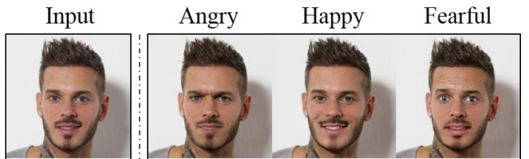
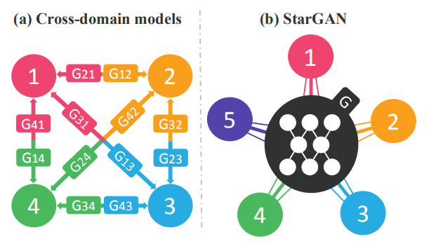
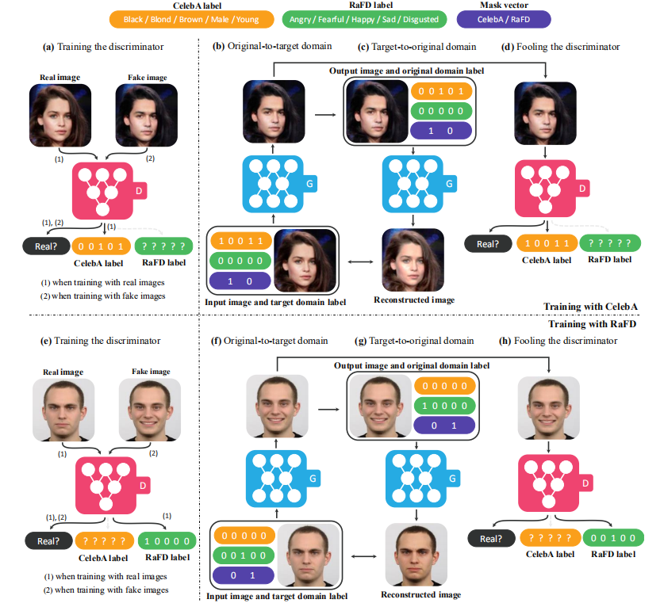

将CycleGAN应用到多域迁移
以CycleGAN为代表的一些算法在两个域之间的图像迁移任务上取得了很大的成功。当涉及到k个域的图像迁移任务时，这些算法只能将原问题转化为任意两个域间的图像翻译任务的组合，最终需要训练k(k-1)个生成器。这样的算法无疑是缺乏扩展性的。
StarGAN是一种只需要训练一个生成器即可完成多个域之间互相迁移的模型；同时，StarGAN也是首个做到在不同数据集（celebA与RaFD）上联合训练同一个生成器的模型。作者应用StarGAN完成了一些在人脸数据集上的表情迁移工作，证明了StarGAN既能高效完成多域迁移的任务，又能取得优于baseline模型的效果。
为了描述方便，考虑在一个人脸数据集上的图像翻译任务。定义属性（attribute）为图片上一类有意义的特征信息，例如发色，性别，年龄，表情等；定义域（domain）为含有同一属性的图像集合。例如，一个全是棕发女人的数据集就是一个域，一个全是老年男人的数据集也是一个域。我们希望完成的图像翻译任务就是将一个域的属性与另一个域的属性结合，在人脸数据集上的多域迁移预期效果如下图：

这项任务其实使用CycleGAN其实也能完成。假设需要处理4个域的迁移，那么训练好12个生成器就能完成任务。但是，如果此时任务更新了，需要完成5个域的图像翻译了，那么就还得额外训练8个新的生成器来满足需求。可见这种方法是十分低效率的。除此之外，这些生成器功能也是存在重复的。凭借常识我们知道人脸图片上有一些特征对于不同域之间的图像翻译是广泛存在的（例如脸型），如此看来，这些生成器岂不是把这些特征从零开始又学了一遍？上述算法的重复性训练也给了我们启示，可以考虑只训练一个生成器，并根据输入的目标域来生成出不同的图像，这就是StarGAN了，其结构与一般思路的对比如下：
为了使这个结构work，作者重新设计了网络结构。首先是生成器，因为涉及到多个域之间的迁移，生成器接受的输入除了原始图片外，还有目标域的标签；其次是判别器，除了需要判断图片真假外，还需要判别图像属于哪个域。在训练时，为了使生成器更灵活（flexibly），StarGAN会随机的生成一组目标域标签来训练生成器。StarGAN还提出了联合训练不同数据集的策略，具体见Method部分。记生成器的输入标签为c，有：\(G(x,c)\rightarrow y\)；对于判别器，它需要输出判断真假的置信度分\(D_{src}(x)\)与分类标签\(D_{cls}(x)\)，即\(D:x\rightarrow{\{D_{src}(x),D_{cls}(x)}\}\)。作者引入了3种损失，首先为对抗性损失：
\(\mathbb{L}_{adv}=\mathbb{E}_x[\log{D_{src}(x)}]+\mathbb{E}_{x,c}[\log{(1-D_{src}(G(x,c))}]\)
在训练判别器与生成器时，二者都是希望判别器能够将图片的域信息准确分类的，这一点从逻辑上讲很好理解。只不过在训练G与D时，分类损失的形式不同罢了。在训练判别器时，输入的是真实图片，因此分类损失可表示为：\(\mathbb{L}_{cls}^r=\mathbb{E}_{x,c'}[-\log{D_{cls}(c'|x)}]\)
而在训练生成器时，生成器不仅希望判别器能够将假图片分类为真，还能够将其分类到目标域之中：\(\mathbb{L}_{cls}^f=\mathbb{E}_{x,c}[-\log{D_{cls}(c|G(x,c))}]\)
仅有上面两种损失是不够的，还差了循环一致性损失。原因同CycleGAN，大概就是说上面两种损失还不足以保证图像翻译的内容，这其实是基于unpaired数据集的GAN都要面临的问题。举个例子，本来希望将一个金发女人的图片翻译为黑发女人，如果生成器产出了一张黑发男人，上面两种损失值也会很低，但显然这不是我们想要的。循环一致性损失定义如下：\(\mathbb{L}_{rec}=\mathbb{E}_{x,c,c'}[||x-G(G(x,c),c')||_1]\)
总结一下，训练判别器D时需要考虑的全部损失如下：\(\mathbb{L}_D=-\mathbb{L}_{adv}+\lambda_{cls}\mathbb{L}_{cls}^r\)
训练生成器时需要考虑的全部损失如下：\(\mathbb{L}_G=\mathbb{L}_{adv}+\lambda_{cls}\mathbb{L}_{cls}^f+\lambda_{rec}\mathbb{L}_{rec}\)
其中\(\lambda\)全部是用来平衡各损失的超参数，在论文的实验中一律采用\(\lambda_{cls}=1\)和\(\lambda_{rec}=10\)。
主要参考StarGAN的官方实现代码在看源代码之前，首先了解下数据集。celebA数据集共有5个特征，包含发色，年龄等属性；RaFD数据集标记了表情信息，共8个特征。两个数据集之间有一个明确的差别，就是celebA数据集的特征是可以重复的，例如[1,0,1,0,0]这种标签是可能存在的，因为发色与性别，年龄等属性是不矛盾的；而在RaFD数据集中，所有的标签都是one-hot编码的，因为同一张人脸上不可能同时做出多个表情。下面主要讲解一个iter的训练过程。
首先从loader中提取训练图片与标签，再随机生成目标域的标签：
#####################
# 生成随机目标域标签 #
#####################
rand_idx = torch.randperm(label_org.size(0))
label_trg = label_org[rand_idx]
x_real = x_real.to(self.device) # Input images.
c_org = c_org.to(self.device) # Original domain labels.
c_trg = c_trg.to(self.device) # Target domain labels.
label_org = label_org.to(self.device) # Labels for computing classification loss.
label_trg = label_trg.to(self.device) # Labels for computing classification loss.
之后训练判别器。一共包含3类损失，为对抗性损失，分类损失与梯度惩罚损失（这一部分将在WGAN论文笔记中说明，在此省略）：
out_src, out_cls = self.D(x_real)
out_src, out_cls = self.D(x_fake.detach())
x_fake = self.G(x_real, c_trg)
#############
# 对抗性损失 #
#############
d_loss_real = - torch.mean(out_src)
d_loss_fake = torch.mean(out_src)
###########
# 分类损失 #
###########
d_loss_cls = self.classification_loss(out_cls, label_org, self.dataset)
###############
# 梯度惩罚损失 #
###############
###########
# 更新梯度 #
###########
d_loss = d_loss_real + d_loss_fake + self.lambda_cls * d_loss_cls + self.lambda_gp * d_loss_gp
self.reset_grad()
d_loss.backward()
self.d_optimizer.step()
在上面的程序中，出现了x_fake = self.G(x_real, c_trg)这步。下面具体解释一下标签是如何与原始图片一起被送进生成器的。假设celebA数据集上某张图片的标签为[1,0,0,1,0]，原始图片的尺寸为[1,3,256,256]。StarGAN的做法是将标签先扩充为[1,5,256,256]的尺寸后再与原始图片拼接，最终得到[1,8,256,256]的图片后一起喂给生成器。具体怎么扩充呢，还是以[1,0,0,1,0]这个标签为例，扩充之后标签将包含3个256*256的全是0的矩阵与2个256*256的全是1的矩阵。扩充操作的代码可见model.py文件：
def forward(self, x, c):
# Replicate spatially and concatenate domain information.
c = c.view(c.size(0), c.size(1), 1, 1)
c = c.repeat(1, 1, x.size(2), x.size(3))
x = torch.cat([x, c], dim=1)
ret = self.main(x)
return ret
训练判别器还有一点需要说明，在计算分类误差时，对于celebA数据集采用BCE损失，对于RaFD数据集时采用交叉熵损失。这是因为celebA的多个属性之间是不矛盾的，因此需要将其拆解为5个二分类问题计算损失。举个例子，celebA中[0,0,1,1,0]是可能的一种标签，而在RaFD中，显然标签中的1只能出现一次。
x_fake = self.G(x_real, c_trg)
out_src, out_cls = self.D(x_fake)
x_reconst = self.G(x_fake, c_org)
#############
# 对抗性损失 #
#############
g_loss_fake = - torch.mean(out_src)
###########
# 分类损失 #
###########
g_loss_cls = self.classification_loss(out_cls, label_trg, self.dataset)
#################
# 循环一致性损失 #
#################
g_loss_rec = torch.mean(torch.abs(x_real - x_reconst))
###########
# 更新梯度 #
###########
g_loss = g_loss_fake + self.lambda_rec * g_loss_rec + self.lambda_cls * g_loss_cls
self.reset_grad()
g_loss.backward()
self.g_optimizer.step()
关于StarGAN的效果为什么比其它一些生成模型好（如CycleGAN等），作者提到了一些猜想：第一点是使用同一个生成器生成不同域的图片会迫使这个生成器去学到图片最本质的利于翻译的特征；第二点是用不同域的照片训练生成器相当于起到了数据增强的作用。
我下载了作者提供的预训练模型试着跑了一遍StarGAN，发现在128*128的图片上效果较好，而在256*256的图片上图片出现扭曲等奇怪的现象。我认为可能是celebA数据集的问题。实际上，因为celebA数据集各属性不是矛盾的，StarGAN学到的不仅仅是5个域之间的映射，而是\(2^5=32\)个域相互之间的映射！如果要让CycleGAN来完成这个任务，将需要训练接近1000个生成器...